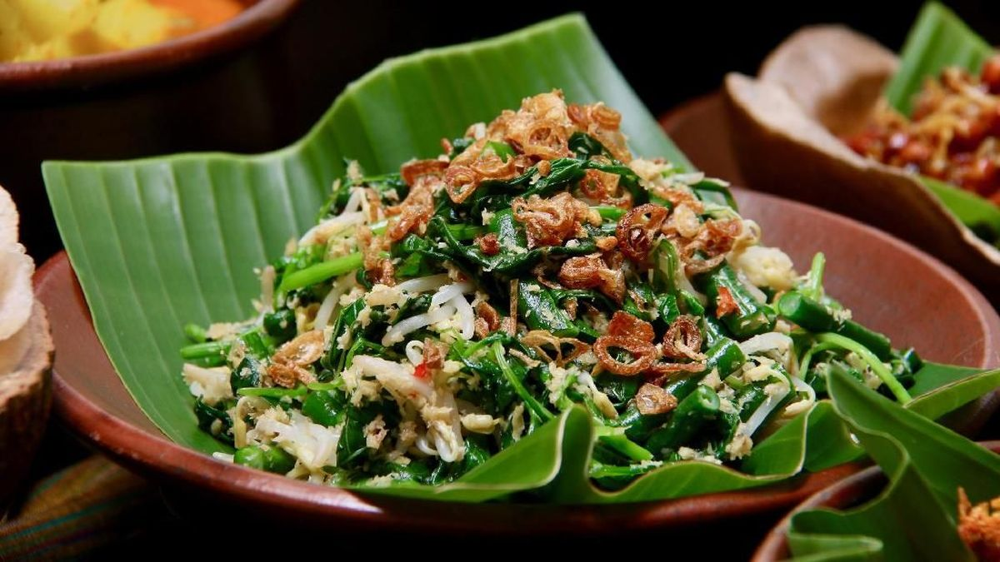
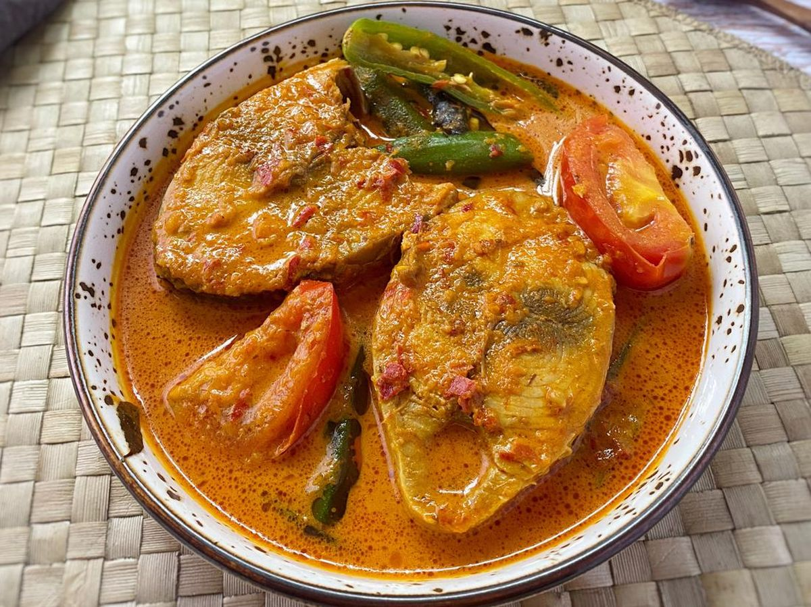
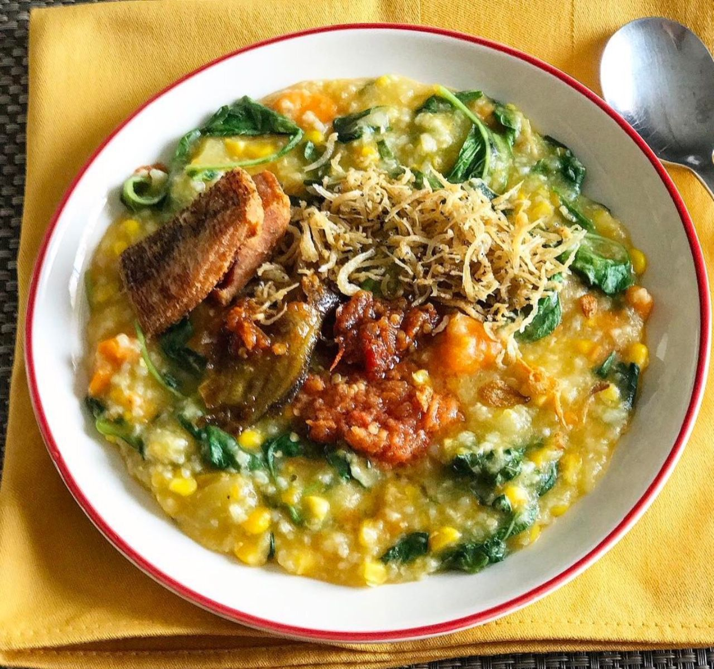
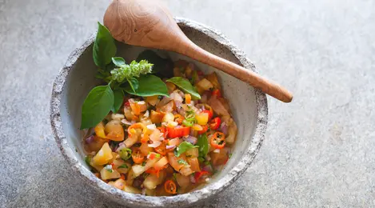
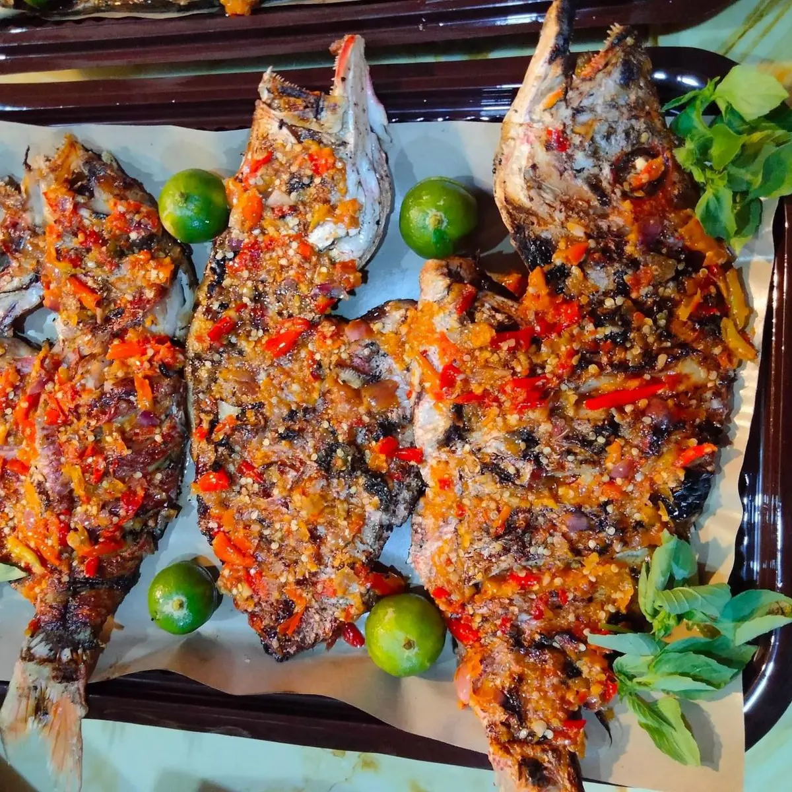

Kohu-Kohu
Salad tradisional khas Maluku dari sayuran, kelapa parut, dan ikan suwir yang dibumbui dengan jeruk dan rempah segar.
Bahan-bahan:
- 100 gr kelapa parut kasar, sangrai
- 100 gr kacang panjang, rebus dan potong
- 100 gr taoge, seduh air panas
- 1 ikat daun kemangi
- 1 ekor ikan cakalang/tongkol, kukus dan suwir
- 2 sdm air jeruk nipis
- Garam secukupnya
Bumbu halus:
- 5 siung bawang merah
- 3 siung bawang putih
- 5 buah cabai rawit merah
- 1 sdt terasi bakar
Cara membuat:
- Haluskan semua bahan bumbu.
- Campurkan kelapa sangrai, bumbu halus, dan air jeruk nipis.
- Tambahkan sayuran rebus, daun kemangi, dan ikan suwir. Aduk rata.
- Tambahkan garam sesuai selera. Sajikan sebagai lauk atau hidangan utama.

Ikan Kuah Asam
Masakan ikan segar dengan kuah asam pedas yang segar khas Maluku.
Bahan-bahan:
- 500 gr ikan kakap atau ikan segar lainnya
- 2 buah tomat, potong-potong
- 3 siung bawang merah, iris
- 2 siung bawang putih, iris
- 5 cabai rawit merah
- 2 sdm air asam jawa
- Garam dan gula secukupnya
- Air secukupnya
Cara membuat:
- Rebus ikan bersama tomat, bawang merah, bawang putih, dan cabai rawit dalam air hingga matang.
- Tambahkan air asam jawa, garam, dan gula, koreksi rasa sesuai selera.
- Masak hingga kuah terasa asam segar dan ikan matang sempurna.
- Sajikan hangat dengan nasi putih.

Bubur Tinutuan Maluku
Bubur sehat dari campuran sayuran dan beras khas Maluku yang kaya nutrisi.
Bahan-bahan:
- 200 gr beras
- 100 gr labu siam, potong dadu
- 100 gr bayam
- 50 gr jagung manis pipil
- 1 buah wortel, potong kecil
- 2 batang daun bawang, iris
- 2 siung bawang putih, cincang halus
- Garam dan merica secukupnya
- Air secukupnya
Cara membuat:
- Masak beras bersama air hingga menjadi bubur lembut.
- Masukkan semua sayuran dan bawang putih, masak hingga sayuran lunak.
- Bumbui dengan garam dan merica, aduk rata.
- Sajikan hangat sebagai sarapan sehat.
Ayam Kuah Kuning
Ayam yang dimasak dengan bumbu kuning khas Maluku yang gurih dan kaya rempah.
Bahan-bahan:
- 1 ekor ayam, potong sesuai selera
- 5 siung bawang merah
- 3 siung bawang putih
- 3 cm kunyit, bakar dan haluskan
- 2 batang serai, memarkan
- 2 lembar daun salam
- 500 ml santan
- Garam dan gula secukupnya
- Minyak untuk menumis
Cara membuat:
- Tumis bawang merah, bawang putih, dan kunyit hingga harum.
- Masukkan ayam, aduk hingga berubah warna.
- Tambahkan serai, daun salam, dan santan, masak dengan api kecil hingga ayam empuk dan kuah mengental.
- Bumbui dengan garam dan gula, koreksi rasa.
- Sajikan hangat dengan nasi putih.

Sambal Colo-colo
Sambal segar khas Maluku yang pedas dan asam, cocok sebagai pelengkap ikan bakar.
Bahan-bahan:
- 10 cabai rawit merah, iris tipis
- 5 siung bawang merah, iris tipis
- 2 buah tomat merah, potong dadu kecil
- 1 buah jeruk nipis, ambil airnya
- Garam dan gula secukupnya
- Minyak goreng secukupnya (untuk menyiram)
Cara membuat:
- Campur cabai, bawang merah, tomat, garam, dan gula dalam wadah.
- Tambahkan air jeruk nipis, aduk rata.
- Siram dengan minyak goreng panas agar aroma lebih keluar.
- Sajikan sebagai pelengkap ikan bakar atau lauk lainnya.

Ikan Bakar Rica-Rica
Ikan bakar dengan bumbu rica-rica pedas khas Maluku yang bikin lidah goyang.
Bahan-bahan:
- 1 ekor ikan segar (kakap, kerapu, atau sesuai selera)
- 6 siung bawang merah
- 4 siung bawang putih
- 10 cabai merah keriting
- 5 cabai rawit merah (sesuai selera pedas)
- 2 cm jahe
- 2 batang serai, memarkan
- 2 sdm air jeruk nipis
- Garam dan gula secukupnya
- Minyak untuk menumis
Cara membuat:
- Haluskan bawang merah, bawang putih, cabai, dan jahe.
- Tumis bumbu halus bersama serai hingga harum.
- Tambahkan garam, gula, dan air jeruk nipis, masak sebentar.
- Baluri ikan dengan bumbu, diamkan minimal 30 menit agar meresap.
- Bakar ikan hingga matang sambil sesekali diolesi sisa bumbu.
- Sajikan hangat dengan nasi putih dan sambal tambahan.